미아는 개발실에서 듣던 말을 떠올렸다.23미아: 여기서 확인하시는 시간도 지원 계획에 넣고 싶어요.24
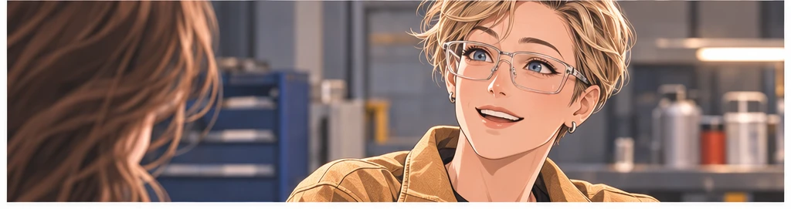
미아의 견적서는 처음보다 길어졌다.25
막시마의 첫 현장
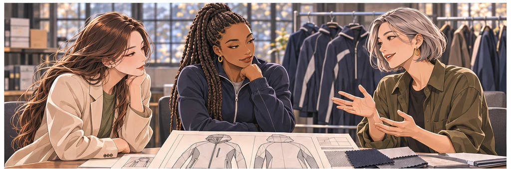
막시마의 첫 현장은 화보 촬영장이 아니었다.26
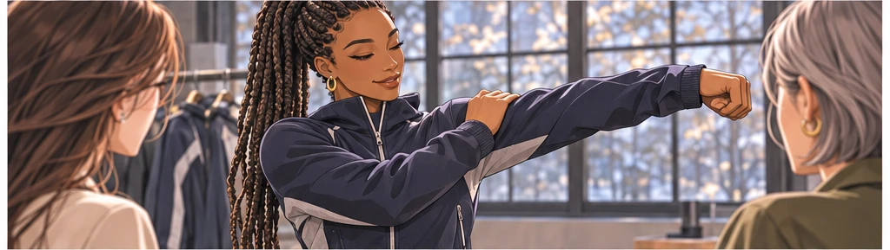
테사 윌리엄스: 여기가 당기면 출발할 때 거슬려요.27
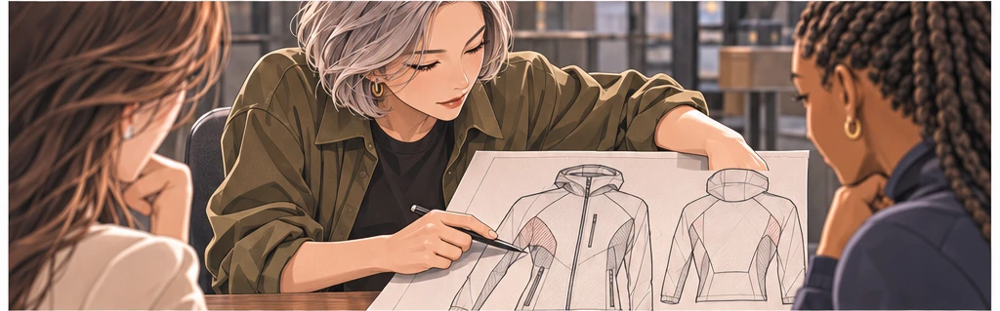
실비아 리드: 움직임부터 다시 보겠습니다.28
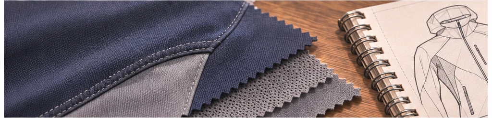
멋있어 보이는 선 하나를 지우고 움직일 자리를 남겼다.29
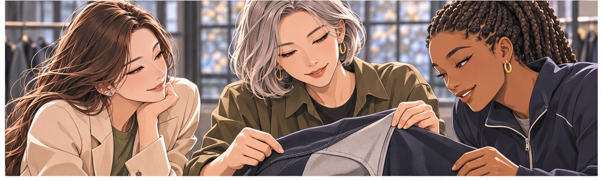
만드는 사람과 쓰는 사람이 같은 테이블에 앉았다.30
돌아온 제안서
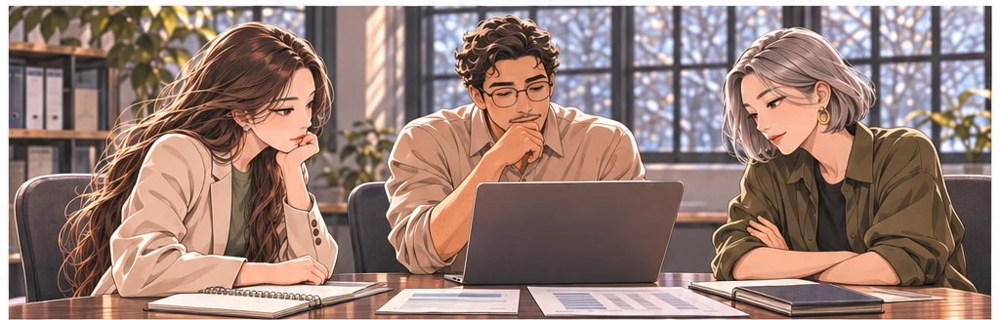
돌아온 사무실에서는 현실적인 질문이 기다렸다.31
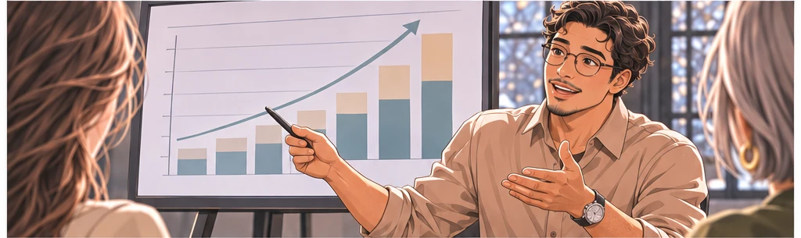
다니엘 모랄레스: 장비 일체와 유지 지원까지 하면 부담이 큽니다.32미아: 지킬 수 없는 약속이면 줄여야죠.33
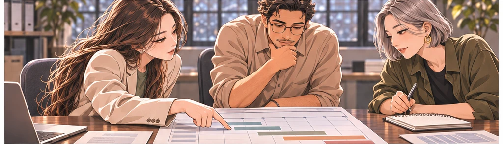
마음을 증명하려고 규모부터 키우지는 않았다.34
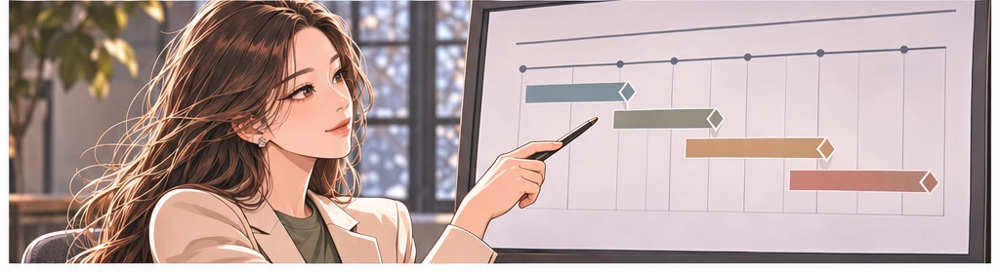
미아: 필요한 장비 전체를 책임 있게 지원할 체계를 먼저 만들겠습니다.35
약속을 적는 날
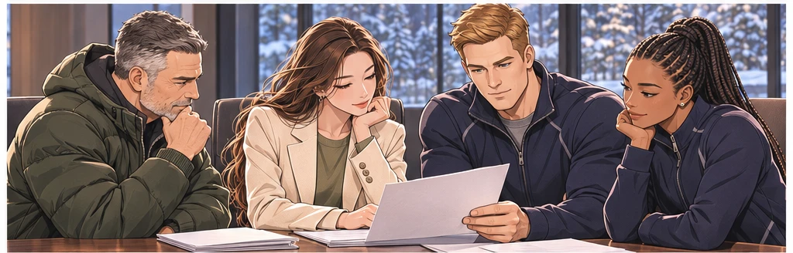
몇 번의 검토 뒤 지원 협약을 맺는 날이 왔다.36미아: 선수들의 준비가 중심에 있도록 하겠습니다.37
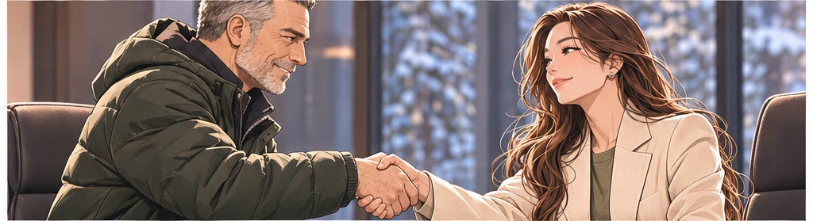
패트릭 설리번: 필요한 얘기는 솔직하게 나누겠습니다.38
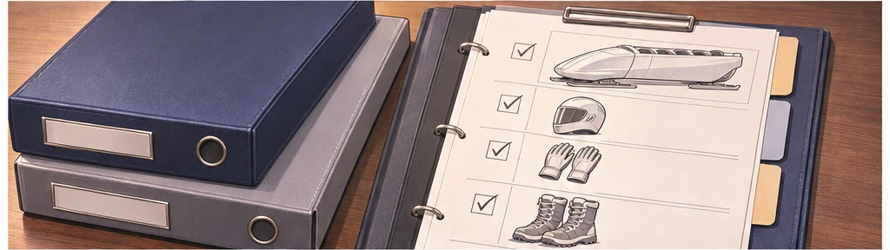
미국 국가대표 봅슬레이팀 장비 일체 지원은 문장으로만 끝나지 않아야 했다.39
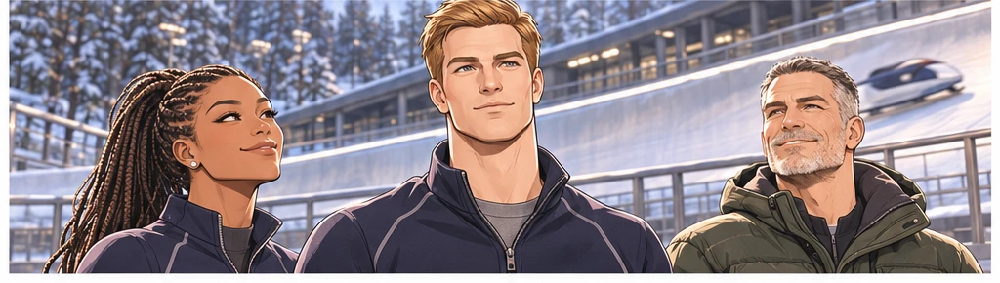
마이클은 약속을 오래 바라보았다.40
처음 도착한 상자
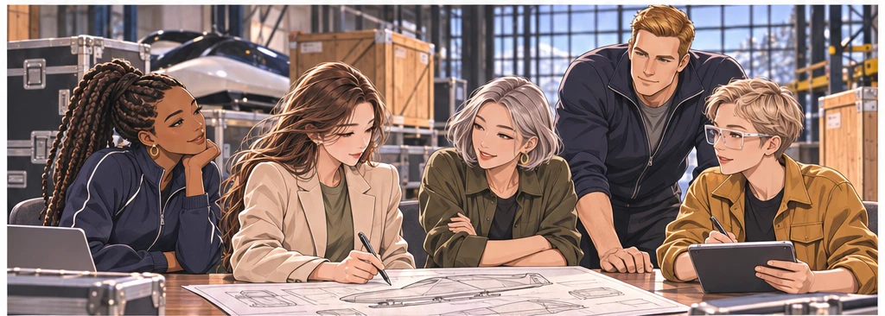
준비한 장비가 차례로 현장에 도착했다.41
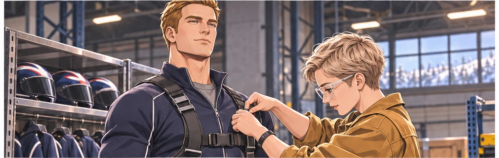
마이클: 이 부분부터 다시 맞춰볼게요.42
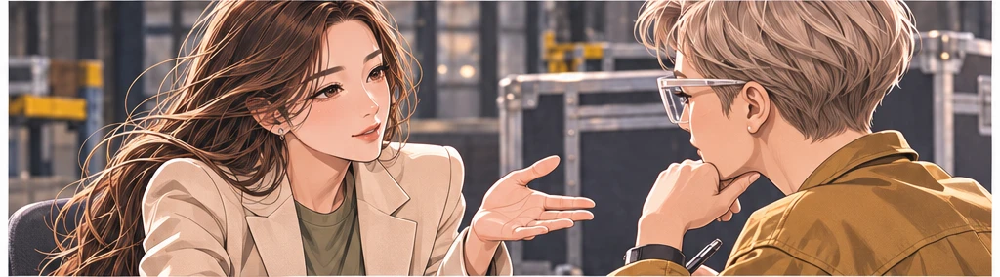
미아: 변경이 필요하면 바로 알려주세요.43
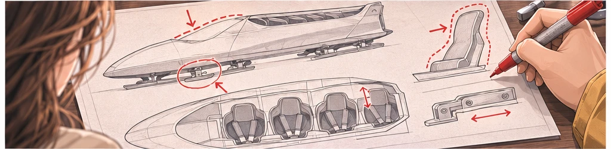
도착이 끝이 아니라 확인의 시작이었다.44
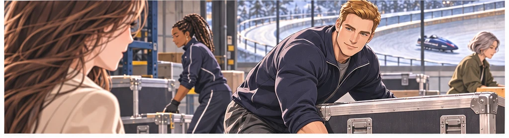
마이클: 약속했던 분이 직접 오셨네요.45
짧은 대화
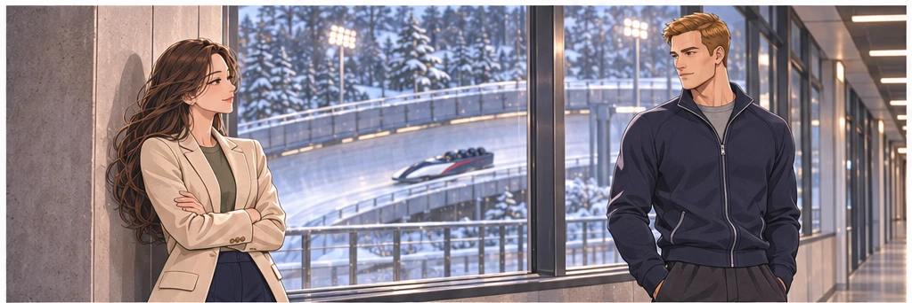
미아: 제가 와야 빨리 배울 수 있을 것 같아서요.46마이클: 보통은 잘 아는 척부터 하던데요.47
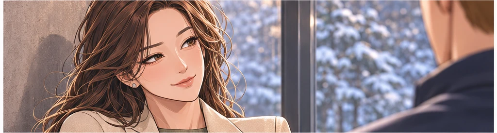
미아: 그건 제가 제일 못 하는 일이에요.48두 사람 사이에 처음으로 설명이 필요 없는 웃음이 생겼다.49
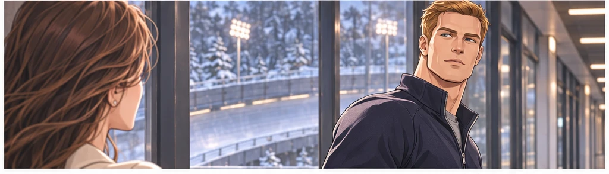
마이클: 다음에는 훈련 이야기도 들려드리죠.50
추운 날의 기다림
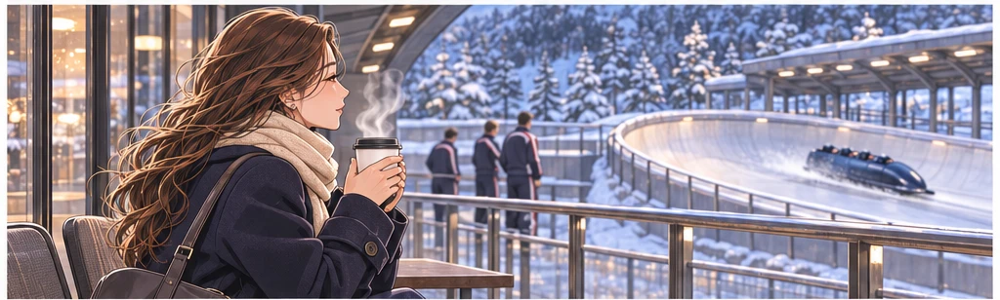
다음 방문에서는 기다리는 시간이 더 길었다.51미아: 여기선 커피도 빨리 식네요.52마이클: 방문자 자리 난방부터 확인했어야 했네요.53미아: 저도 이제 장비가 필요하네요.54
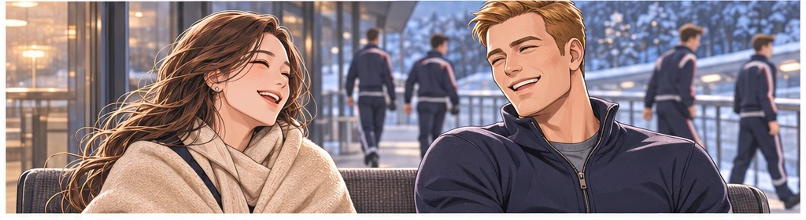
자잘한 불편을 기억해주는 사람의 온기가 남았다.55
카메라 밖의 이야기
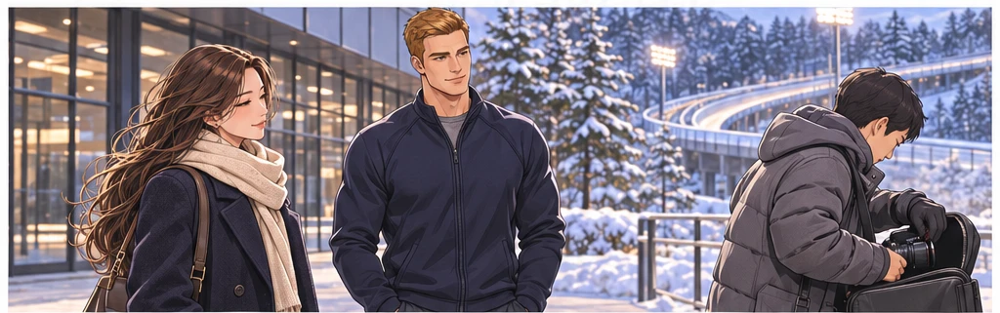
공식 촬영이 끝난 뒤에도 대화는 조금 더 이어졌다.56
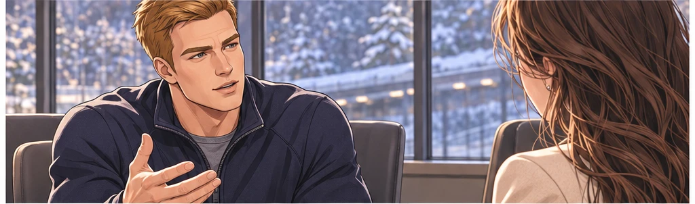
마이클: 스포츠 후원은 왜 시작하셨어요?57
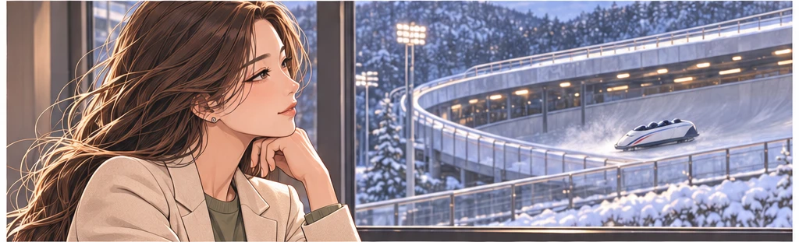
미아: 다쳤을 때 누군가 옆에 있어줬거든요.58미아: 다시 뛸 때까지 혼자가 아니었던 걸 아직 기억해요.59그는 미아를 후원사의 대표가 아닌 한 사람으로 보기 시작했다.60
기록이 없는 날
방문할 때마다 좋은 기록을 보는 것은 아니었다.61미아는 위로를 준비하다가 말을 멈췄다.62마이클: 오늘은 보여드릴 게 별로 없었네요.63미아: 보여주려고 훈련하는 건 아니잖아요.64마이클은 처음으로 그날의 힘든 부분을 말했다.65
이름을 기억하다
공책의 선수 명단은 점점 서로 다른 얼굴이 됐다.66마이클의 메시지: 지난번 얘기, 다음에 조금 더 해도 될까요?67미아: 네. 시간 괜찮을 때요.68공식 일정표 밖에 작은 약속이 하나 생겼다.69누군가의 이름을 기다리는 일이 시작됐다.70
얼음 위의 약속
얼음 위에서 맺은 약속은 기록보다 오래 남아야 했다.71마이클: 다음에는 제 이야기도 잘 들어주실 것 같네요.72미아: 끝까지는 들어드릴 수 있어요. 답은 잘 모르겠지만.73마이클: 그 정도면 충분합니다.74빠르게 달리는 사람과 천천히 듣는 사람의 시간이 나란히 놓였다.75